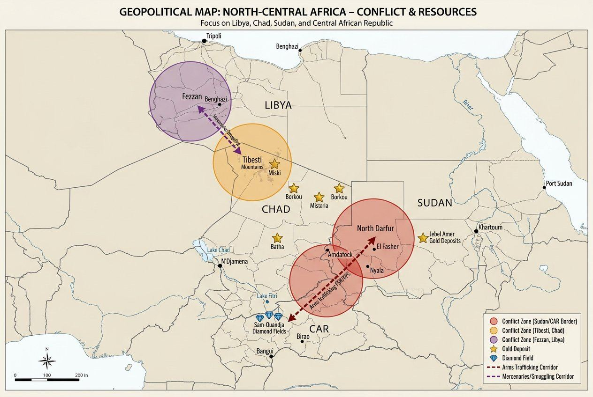

Interactive mapping
Our real point of difference: an evolving map of the Sahel, the Lake Chad basin, the Sahara and the Red Sea, updated monthly. No French-language think tank does this properly today.
The Saharan quadrangle: conflict & resources
Our first thematic map charts conflict zones (Fezzan, Tibesti, Darfur/CAR), gold and diamond deposits, and the arms and mercenary corridors linking Libya, Chad, Sudan and CAR.

The interactive version is under construction
The fully interactive version of our mapping (thematic layers, continuous updates) is being built from our field sources. In the meantime, a first thematic map is already published above.
Be notified when it goes liveWhat the map will document
Armed incidents
Geolocation of incidents involving armed groups in the region.
Actors & zones of influence
Mapping of areas controlled or influenced by the main armed and political actors.
Oil and mining infrastructure
Oil and mining sites, and strategic logistics corridors.
Smuggling routes
Gold smuggling routes and informal cross-border circuits.
Field sources and open data
The map will combine field surveys, interviews with local correspondents and verified open sources. Every data point published will be dated and sourced. The target update cycle is monthly.
From Datawrapper to Mapbox
Version 1 — Datawrapper
A first static or semi-interactive map, to publish reliable initial coverage quickly without waiting for heavy technical development.
Version 2 — Mapbox / Leaflet
A fully interactive map, with thematic layers and continuous updates, once the data model has stabilised.